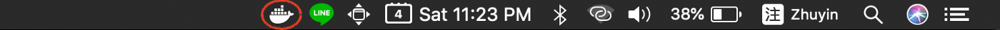
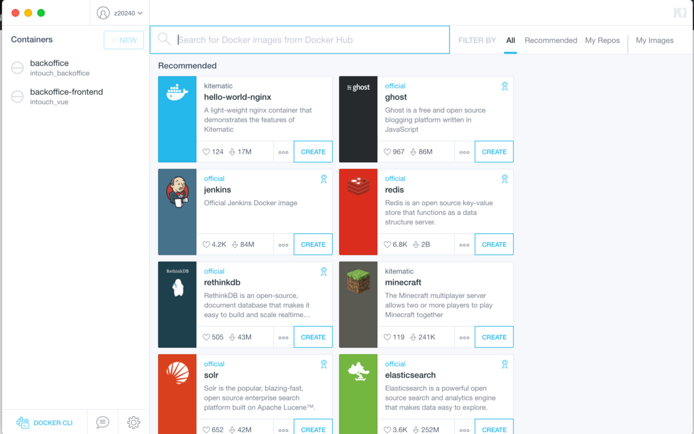

# Docker 學習筆記 (二) — 安裝 Docker
# Docker 的問世，翻轉了人們對用環境部署與開發的習慣，學會 Docker 絕對是一項不虧本的投資

# 安裝 Docker
上一篇 我們已經簡介了 Docker 的優勢，與其基礎簡介。
本篇我們來講講如何安裝 Docker。
# 在 Ubuntu/Debian 上安裝 Docker
Docker 本質上是基於 Linux 核心中隊資源分離的機制與網路命名空間的特性來建立的技術，因此 Linux 對於 Docker 支援是最完善的。
我們可以使用 Apt 進行 Docker 的安裝。
sudo apt-get install docker.io
安裝完後，我們要先啟動 docker
sudo service docker start
之後我們可以使用 docker version 查看
sudo docker version
正常的情況應該要看到這樣
Client:
Version: 18.09.5
API version: 1.39
Go version: go1.10.8
Git commit: e8ff056dbc
Built: Thu Apr 11 04:44:28 2019
OS/Arch: linux/amd64
Experimental: false
若是覺得每次都要使用 sudo 調用 docker 很麻煩的話，我們可以將自己加入 docker 的 group 中。
sudo usermod -aG docker $USER
# 在 MacOS/Windows 上安裝 Docker
過去，在 MacOS 跟 Windows 上安裝 Docker 是比較蛋疼的，不是要另外安裝虛擬機就是要使用 Docker 開發的 tool box 外掛套件。
然而隨著版本的更迭，如今 Windows 與 MacOS 也終於可以免去這樣次等公民般的困擾了。
如今我們只需要到 Dockerhub 即可下載 Docker 相關的安裝檔案。
Windows
MacOS
安裝完後啟動 Docker，即可在工作列上看到 Docker 運作著。

Docker 也有一個 Container 的管理工具 「Kitematic」 ，可以提供可視化的容器管理。
並且可以在當中搜尋自己喜歡 Image 下載使用。

至此，安裝 Docker 的部分算是告一段落了。
下一篇將開始講解 Docker 的指令與使用方法 。